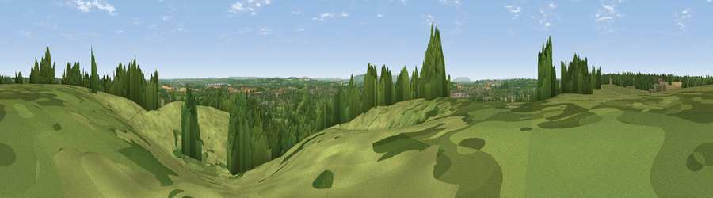

Viewpoint near Tiddington
#31321 in England · top 63% of its area beats it · near TiddingtonWhere it is
The exact computed spot (SP 20675 57075). Click the marker for map links.
The view, rendered

A 360° render of this exact spot computed from the terrain model, tree cover and land cover — summer colours, afternoon light, calibrated against photographs of famous viewpoints. Real trees, hedges and buildings will differ in detail.
The panorama
Grey silhouette: terrain skyline in each direction (720 bearings, Earth curvature and refraction included). Dashed green: skyline with trees (+15 m) and buildings (+8 m) as obstacles. Blue strip: how far the ground is visible on each bearing.
Where the view opens
Wedge length = distance to the farthest visible ground on that bearing (vegetation-aware). Rings at 10, 25 and 50 km.
What fills the view
52% grassland · 25% woodland · 15% cropland · 6% built-up
Angular shares of the visible panorama (visual magnitude), not map area. Landscape diversity 0.51 (0–1 Shannon).
Key numbers
More beautiful places nearby
The staircase of upgrades: each row has a higher view potential than everything closer. Driving times are estimates from straight-line distance, calibrated against real road routing — check an actual route before setting out.
| Place | Direction | Drive | Score |
|---|---|---|---|
| Viewpoint near Tiddington | E · 0 km | ~1 min | 48.6 |
| Bordon Hill | SW · 4 km | ~10 min | 59.0 |
| Viewpoint near Ettington | SE · 7 km | ~14 min | 60.1 |
| Lodge Hill | WNW · 10 km | ~20 min | 64.0 |
| Viewpoint near Meon Vale | SSW · 12 km | ~22 min | 77.0 |
| Broadway Hill | SSW · 23 km | ~38 min | 77.7 |
| Viewpoint near Elmley Castle | SW · 29 km | ~46 min | 80.5 |
| Bredon Hill | SW · 30 km | ~47 min | 83.0 |
52.21151, -1.69884 · source: screening · position refined by local search. Computed location — check access rights before visiting.